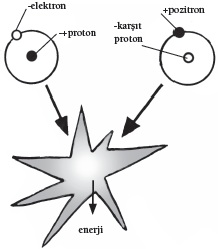

Büyük patlama, karşıt madde ve varoluşumuzun gizemi
Bundan daha büyük bir soru olabilir mi? Neden biz, galaksi, evren, her şey var? Bu sorunun cevabını anlayabilmek için her şeyin başlangıcına gitmemiz gerekiyor, tabii eğer bulabilirsek.
Birçok kültürde başlangıç diye bir şey yoktur. Örneğin antik Yunanlılar daire kavramına saygı duyarlardı; evrende temel olan her şey, evrenin kendisi de dahil durmadan tekrar eden daireler içinde cereyan ederdi.
20. yüzyıl başına dek, gökbilimciler arasında da buna çok benzer bir görüş birliği vardı: Evrenimiz ezelden beri mevcut olmuştu, bir başlangıçtan bahsetmenin hiçbir anlamı yoktu. Tabii ki bu kilise otoritelerini biraz rahatsız ediyordu.
Tekvin Kitabı bir başlangıçla başlar: Hiçbir şeyden bir şey yaratılır. Georges Lemaître adında Belçikalı bir rahibin, gökbilimin, evren için bir başlangıç noktası düşünmesi gerektiğine karar vermesinin sebebi belki de buydu. Bir fizik profesörü ve yetkin bir gökbilimci olan Lemaître “Büyük Patlama” olarak bilinen fikri ortaya atan ilk kişi olmuştu. Lemaître’in hipotezi her şeyin bir “ilk atom”dan doğduğu yönündeydi, bu ilk atom parçalanmış ve evrendeki bütün maddeyi yaratmıştı. Lemaître, Einstein’ın evrenin boyutlarını betimleyen genel görelilik denklemlerinden başlayarak evrenin yarıçapının değişebileceğini, başka bir deyişle evrenin genişleyebileceğini göstermiştir.
Bu kuramsal bir değerlendirmeden fazlasıydı: Kanıtı da mevcuttu. Lemaître ile başkalarının topladığı astronomik gözlemler, çoğu galaksinin bizimkinden uzaklaştığını gösteriyordu. Bunun ilginç bir sonuç doğurduğu Lemaître açısından açıklık kazanmıştı. Belki de galaksiler, Einstein’ın uzay-zamanı genişlediği için uzaklaşıyordu? Lemaître’in sonuçta kaleme aldığı makalede, “kozmik yumurta” dediği şeyin patlamasından çıkmış, genişleyen bir evrende yaşadığımız ileri sürülüyordu.
Hiçbir Şeyden Doğan Bir Şey
Lemaître’in çalışması Papa’yı ürkütmüştü; gökbilimcileriyse o kadar değil. Papa’nın bir bilimsel kuramı onaylayacak olması, bu kuramın verilerinin ve kuramlarının hiçlikten yaratılma öğretisini desteklemesi rahatsızlık yaratıyordu. Yine de yirmi-otuz yıl sonra İngiliz gökbilimci Edwin Hubble, evrenin başlangıcı fikrini kozmolojinin ön cephelerine taşıdı. Hubble birçok farklı gökbilimcinin verilerini bir araya getirip kendi verilerini ekleyerek Lemaître’in çalışmasını ileri götürdü. Neredeyse bütün galaksilerin muazzam bir hızla bizden uzaklaştığını ve evrenin genişliyor olması gerektiğini kuşkuya yer bırakmayacak şekilde gösterdi.
Gelgelelim, evrenin her zaman bizim gördüğümüz gibi olmadığı fikri yıllarca yoğun bir tartışmanın konusu olmuştur. Bu tartışmayı sonuca bağlayan kanıt –kimi zaman “Büyük Patlama’nın yankısı” olarak da bilinen kozmik mikrodalga arkaplan ışınımı– ancak 1963’te bulundu. Bu noktada, Büyük Patlama’nın neredeyse bütün muhalifleri bunun kozmik tarihe getirdiğimiz en iyi açıklama olduğuna kani olmuştu. Büyük Patlama kozmolojisinin ilerlemesiyle birlikte, neden hiçbir şey olmayacağına bir şeyin var olduğu sorusuna bir cevap geldi. Fakat bu yalnızca kısmi bir cevaptı. Bu fikir açık sorular doğuruyordu: “Büyük Patlama’ya ne yol açtı?”, “Ne patladı?” gibi.
Burada fizikçiler farklı yollara sapmışlardır. Bazıları bu soruların anlamsız olduğunu; çünkü zamanın Büyük Patlama sırasında varlık bulduğunu, dolayısıyla “önce” mefhumunun hiçbir anlamı olmadığını söylerler. Bunu, Kuzey Kutbu’nun kuzeyinde ne bulunduğunu sormaya benzetirler. Bazıları cevap verme yönünde bazı girişimlerde bulunmuşlar; fakat bu cevaplar sınanamayacak spekülasyonlar olmaktan ileri gidememiştir. Bu gibi cevaplar, hiçbir şeyin kesin bir miktarda enerjiye sahip olamayacağını, buna sıfır miktarda enerjisi olan bir evrenin de dahil olduğunu söyleyen Heisenberg belirsizlik ilkesi gibi kuantum fenomenlerini gündeme getirmiştir. Bu durumda kuantum dalgalanmaları, bir miktar enerjisi olan bir evren doğuracaktır ve bu evreni güçlendirip bir Büyük Patlama yaratacak süreçler vardır.
Büyük Patlama’nın her şeyin başlangıcı olmadığını, başka boyutlarda meydana gelen süreçlerin sonucu olduğunu söyleyen bazı fizikçiler de vardır; tanınmış bir fizikçi olan Stephen Hawking (bkz. Evreni Değiştirebilir miyim?) gibi. Başka bazı fizikçiler bunu biraz daha ileri götürmüşler; bu başka boyutlarda var olan “membran” olarak bilinen nesneler tekrar tekrar çarpışıp birbirinden ayrılırken, bizim de sonu gelmez bir yaratım ve yıkım döngüsü içine sıkışıp kalmış “döngüsel bir evrende” yaşadığımızı ileri sürmüşlerdir (bkz. Sicim Kuramı Gerçekten Sicimler Hakkında mıdır?). Böyle bir akıl yürütme, yaratılışta ilahi bir ele ihtiyaç olmadığına inanmak isteyenler için tatmin edicidir, fakat böyle olmayanlar için ikna edici değildir. Bu meseleler bilimin eriminin dışında yatıyor olabilirmiş gibi görünmektedir.
Fakat Büyük Patlama’nın nasıl ortaya çıktığını betimleme sorunları dikkate alındığında bile, bir şey yaratıldıktan çok kısa bir süre sonra yine hiçbir şey olmadığını kesinlikle ortaya koyuyor olması gereken, daha sonra ortaya çıkmış başka bir mesele vardır. Edwin Hubble’ın varoluşumuza getirilmiş bir açıklama olarak Büyük Patlama’nın temellerini atmasından önce, başka bir İngiliz, Paul Dirac bu temelleri dinamitliyordu. Bu mesele Dirac’ın fiziğe yaptığı en büyük katkı sayesinde artık iyice açılmıştır; Dirac’ın büyük katkısı karşıt maddedir.
Bütün Karşıt Madde Nereye Gitti?
Dirac pek az sosyal becerisi olan, tuhaf sessiz bir adamdı. Çok aktarılan bir sohbeti onu gayet düzgün bir biçimde özetler: Cambridge’te verilen resmi bir yemek sırasında Dirac kendisi kadar ketum bir insan olan E. M. Forster’ın yanına oturur. Masaya getirilen onca yemek sırasında sohbetleri bir tek soru ve cevaptan ibaret olur. Dirac, Forster’ın Hindistan’a bir Geçit romanındaki bir sahneyi hatırlatarak “Mağarada ne oldu?” diye sorar. Forster epeyce sonra onu “Bilmiyorum,” diye cevaplar.
Belli ki ikili saatleri kafalarında geçiriyordu. Dirac’ın örneğinde bu kesinlikle verimli olmuştu. Atomaltı parçacıklar bahçesinin artık temel bir parçası olarak bilinen karşıt maddenin varlığı, bir kurama ihtiyaç gösteren deneysel bir sonuç yüzünden ileri sürülmüş değildir. Doğrudan, Dirac’ın, kuantum kuramına hakim olan denklemle, Schrödinger denklemiyle (bkz. Schrödinger’in Kedisine Ne Oldu?) ilgili değerlendirmelerinden doğmuştur.
Schrödinger denklemi, bir kuantum parçacığının enerjisini betimlerken ilk bakışta imkânsız gibi görünen bir muamma ortaya atmıştı. Denklem hızla hareket eden bir parçacığın enerjisinin iki rakam içerdiğini söylüyordu. Bu iki rakam birbiriyle çarpıldığında, 0 sonucunu vereceklerdi. Fakat her biri kendisiyle çarpıldığında cevabın 1 olması gerekiyordu.
Normal matematikte böyle bir şey yapılamaz. Fakat Dirac matris olarak bilinen rakam dizilerini kullanarak bunu başardı. Ödenmesi gereken tek bedel, kuantum parçacığının enerjisinin pozitif olduğu kadar negatif olmasıydı. Dirac, işkence kabilinden bir akıl yürütme zinciriyle negatif enerji yüklü parçacıkların dünyamızda tezahür edebileceğini gösterdi. Bu parçacıklar aşina olduğumuz parçacıklar gibi görünecektir; ama tuhaf değişikliklerle.
Dirac, 1928’te yaptığı bir konuşma dizisinde karşıt elektronun varlığını ileri sürdü. Karşıt elektron tıpkı bir elektron gibi görünüyordu, ama artı yüklüydü. Dirac tefe kondu: Dönemin fizikçileri maddenin eksi yüklü elektronlar ile artı yüklü protonlardan oluştuğunu, başka da bir şeyden oluşmadığını düşünüyorlardı (nötronun keşfedilmesine daha dört yıl vardı). Yılmayan Dirac üç yıl sonra kuramını yayınladı. Karşıt elektronun “deneysel fiziğin bilmediği, yeni bir tür parçacık” olduğunu söylüyordu. Karşıt elektron bir elektronla karşılaştığında patlayıcı bir imha olacağı öngörüsünde bulunuyordu. Aynı şey bütün parçacıklar için geçerliydi: Bütün parçacıkların bir karşıt madde düşmanı vardı.
Bu ilan, fizik camiasına tam anlamıyla meydan okumamış olabilir; Dirac başkalarının ne düşündüğüyle pek ilgilenmiyordu. Yine de öngörüsü orada duruyordu; kimse bilmiyordu, ama kanıt da orada duruyordu. Kozmik ışınları; Dünya’nın atmosferine çarpıp başka bir parçacıklar ordusu yaratan yüklü parçacıkları inceleyen fizikçiler, Dirac’ın bu açıklamayı yapmasından beş yıl önce karşıt elektronun izini görmüşler, ama anlamamışlardı. Bu parçacıkların bazıları manyetik bir alandan geçtiklerinde, “yanlış yöne” doğru eğiliyorlardı. Bu bir anormallik olarak not edilmiş, Dirac’ın kuramsal fikirlerini tartıştığı dönemlerde bilimsel toplantılarda tartışılmıştı. Fakat ancak 1932’ye gelindiğinde biri çıkıp da ikiyle ikiyi topladı; Carl Anderson kozmik ışın çarpışmalarının enkazında karşıt elektronu keşfetti. Bu atılım Anderson’a Nobel ödülü kazandırdı.
Evrendeki Karşıt Madde
---
KARŞIT MADDE YAKITI
Maddenin neden karşıt maddeye galebe çaldığını anlamak, insanlığın ayakta kalması açısından kritik bir önem taşıyor olabilir. Türümüz, her şeyin sorumlusu iklim değişikliği gibi “yerel” felaketleri atlatsa bile, nihayetinde çok daha büyük zorluklarla karşılaşacak. Örneğin 5 milyar yıl içinde, ölmekte olan Güneş’imiz genişleyecek ve Dünya’yı yutacak. Bundan çok daha önce, 2 milyar yıl sonra galaksimiz Andromeda galaksisiyle çarpışıp bizi, galaktik bir çarpışan yıldızlar ve gezegenler girdabının içine fırlatacak.
Bu tür senaryolardan sağ çıkabilmek yaşayacak yeni bir yer bulmayı gerektirebilir. Maalesef elimizdeki en iyi ulaşım biçimi bizi en yakın Dünya benzerinin yanına bile götürmeyecektir. Fakat karşıt maddenin bir faydası olabilir. Şimdiye kadar bulduğumuz en iyi aday gezegene bakalım. Gliese 581c, 20 ışık yılı uzaktadır. Bir insan ömrü içinde oraya ulaşmak için, aracın ışık hızının yarısı kadar bir hızla yol alıyor olması gerekir; bizim kimyasallarla işleyen roketlerimiz bu hıza yaklaşamamaktadır.
Tek umudumuz yeni bir yakıt teknolojisi geliştirmektir; maddenin karşıt maddeyle çarpışması halinde salınan enerji gibi bir şey. Bir kilo karşıt maddenin, aynı miktarda normal madde tarafından ortadan kaldırılması bir kilo TNT’nin patlatılmasıyla salınan enerjiden 10 milyar kat güçlü bir enerji yaratacaktır. Bu da karşıt maddeyi kilo başına enerji bakımından, nükleer fizyondan daha verimli kılar. NASA hesaplamaları, 100 ton karşıt maddeyle işleyen bir aracın saniyede 100.000 kilometre gibi bir hıza ulaşacağını ileri sürmektedir.
Bu, bir karşıt madde jeti yaratarak mümkün olabilir. İmha, devasa hızlarla yol alan yüksek enerji yüklü parçacıklar yaratmaktadır. Bu parçacıkları uzay aracının arkasından fırlatmak için bir mıknatıs sistemi kullandığınızda, Newton’ın üçüncü kanununa göre –her eylem eşit ve ters bir tepki doğurur– uzay aracı için devasa bir itiş sağlarsınız. Artık yapmamız gereken tek şey bu gücü araca aktaracak bir karşıt madde mekanizması yapmaktır.
---
Karşıt maddenin var olabileceği açıklık kazandığında evrende ne miktarda bulunduğunu sormak da doğal oldu. Her yerde midir? Karşıt maddeden galaksilerdeki karşıt madde yıldızlarda da fark edilmeksizin bulunur mu? Eğer böyleyse evrende maddeden daha az mı karşıt madde vardır? Bu durum, neden hiçbir şeyin var olmaması yerine bir şeyin var olduğunu açıklar mı? Sorun şudur ki bu sorular karşıt madde hakkında daha fazla şey anlıyor olmayı gerektirir. Fakat etrafınızdaki her şeyle çarpıştığında ortadan kalkan bir şeyi nasıl incelersiniz?
Uzayda birkaç cevap bulduk ve artık makul derecede eminiz ki orada bir yerlerde karşıt maddeden yıldızlar yok; ama evrende karşıt maddenin doğal kaynakları bulunuyor. INTEGRAL teleskopundan görüldüğü üzere bu kaynaklardan biri, Samanyolu’nun merkezine yakın bir yerlerde akan artı yüklü elektron, yani pozitron kaynağıdır. Dünya üzerinde de ipuçları vardır. Carl Anderson’ın göstermiş olduğu üzere, karşıt maddeyi kozmik ışınların Dünya’nın atmosferine çarpması sırasında oluşan enkaza bakarak inceleyebiliriz. Fakat burası da mebzul bir kaynak değildir: Gaz bulutlarına çarpan yüksek enerjili kozmik ışınlar, güneş sistemimizin tamamında saatte ancak yaklaşık 3-4 ton karşıt madde üretir.
KOZMİK IŞIN İZLERİNDE
KARŞIT MADDE
Aslına bakarsanız, Dünya üzerinde karşıt madde yaratma çabalarımız çok daha zayıf olmuştur. Başlıca karşıt madde kaynağı, Cenevre’deki Avrupa Nükleer Araştırmalar Örgütü’dür (CERN); fakat buradaki süreç inanılmaz derecede kaba bir süreçtir. Avrupa Nükleer Araştırmalar Örgütü araştırmacıları pozitif yüklü proton huzmelerini bakır ya da tungsten metal külçelerle çarpıştırmaktadırlar. Sonuçta muazzam bir parçacık fıskiyesi ortaya çıkmaktadır, bunların birkaçı da negatif yüklü karşı protonlardır. Bu pek az parçacığın birkaçı da doğru yöne doğru fışkırıp bir kapanın içinde toplanmaktadır.
CERN araştırmacıları, bu sürece verdikleri 10 milyar jullük enerjiye karşılık bir julün eşdeğerini karşıt madde olarak geri almaktadırlar. CERN’de üretilmiş karşıt maddenin tamamını ortadan kaldıracak olsanız salınan enerji, tek bir ampulü ancak birkaç dakika boyunca aydınlatabilir.
Karşıt maddeyi depolayıp bir elektrik şebekesini beslemeniz mümkün değildir. Karşıt maddenin normal maddeye dokunması mümkün değildir; bu yüzden ancak bir “Kapan”ın elektromanyetik alanı tarafından tutulabilir. Bu aygıtta, parçacıkları bir kabın fiziksel duvarlarından uzak tutmak için elektromanyetik alanlar kullanılır. Bilim insanları karşıt maddeyi bir Kapan’da her seferinde ancak birkaç dakika boyunca tutabilir, her kapanda ancak belli sayıda parçacık tutulabilir: Parçacıkların karşılıklı birbirlerini itmeleri, Kapan’ın manyetik alanından kaynaklanan itmeyi aştığında, karşıt madde kabın duvarlarına çarparak imha olur.

HİDROJEN İLE KARŞIT
HİDROJEN ARASINDA İMHA
Dahası, CERN’deki kapanlar ancak 1000 milyar parçacık tutabilmektedir; bu rakam kulağa çok gibi gelse de öyle değildir. Bu rakam çocukların oynadığı bir balonun içerdiği atom sayısının yüzde biri kadardır; bu rakama da ancak CERN’de yüzlerce milyon yıla eşdeğer bir üretimle ulaşılacaktır. Karşıt maddeyle çalışan uzay gemileriyle yıldızlara gitme hayalinin (bkz. kutu: Karşıt Madde Yakıtı) daha iyi bir yakıt kaynağını beklemesi gerekiyor. Fakat karşıt maddenin kıtlığı CERN’in neden hiçbir şey var olmayacağına, bir şeylerin var olduğu konusunda ipuçları vermesini engelleyememiştir.
Dengeyi Kaybetmek
CERN’deki Büyük Elektron ve Pozitron Çarpıştırıcısı’nda yapılan deneyler Büyük Patlama’nın, 5 metreküp uzayın, 10 milyar karşıt proton ve 10 milyar 1 proton tutması durumunda bir evren yaratmış olabileceğini söylemektedir. Bugünse aynı uzay bir proton içermekte, hiç karşıt madde içermemektedir. Tarihimizin bir noktasında madde ve karşıt madde karşılaşıp birbirlerini ortadan kaldırmış, geride her 5 metreküpte bir proton bırakmışlardır. Bu protonlar nihayetinde bir araya gelmiş ve bugün bildiğimiz evreni oluşturmuştur. Peki, parçacıklar arasında bu ilk dengesizliği ne yaratmıştır?
Rus fizikçi ve muhalif Andrei Sakharov, 1960’ların sonunda bu muammayı çözmeyi kafasına koydu. Bu detektiflik hikâyesi henüz sona ermemiştir; fakat madde ile karşıt madde arasındaki ilk dengesizliği neyin yarattığına dair elimizde bir ipucu bulunuyor. Öyle görünüyor ki nötrino denilen tuhaf küçük parçacıktır bu. Sakharov’un aradığı en büyük ipucu 1964’te geldi; fizikçiler radyoaktif çürümeyi ve bir atomun çekirdeğinde gerçekleşen başka süreçleri yönlendiren zayıf kuvvetle ilgili tuhaf bir şeyler bulmuştu. Zayıf kuvvet başka bütün kuvvetlerin aksine, madde üzerinde, karşıt madde üzerinde olduğu gibi etkili olmuyordu.
Her protonun içinde kuark denilen üç parçacık bulunur. Kuarkların karşıt madde parçacıkları vardır: Karşıt kuarklar. Anlaşıldığı üzere zayıf kuvvet, kuarklara ve karşıt kuarklara farklı biçimde davranır. Zayıf kuvvetin madde ve karşıt maddeye davranma biçimindeki bu farklılık, fizik kanunlarının bir şekilde madde ve karşıt madde açısından ince bir farklılık göstermesi gerektiği anlamına gelir. Bu da demektir ki enerji ve momentumla ilgili korunum kanunları madde ve karşıt madde açısından geçerli olamaz. İkisinin arasındaki dengenin değişmesini mümkün kılan doğal süreçlerin var olması gerekir.
Peki, bu süreçler nelerdir? Bir ipucu bu süreçlerin parçacıklar, karşıt parçacıklar ve ışınım arasında reaksiyonların gerçekleştiği kozmik bir alt üst oluş sırasında ortaya çıkmış olması gerektiğini söylemektedir. Bu reaksiyonlar parçacıklar açısından bir oranda, karşıt parçacıklar açısından başka bir oranda gerçekleştiyse geride kalan miktarlar arasında net bir farklılık olacaktır. Evrenin ilk evreleri, termal dengeden epeyce uzak olması, bu yüzden enerjinin parçacıklara, parçacıkların farklı parçacıklara dönüşümleriyle dolu olması itibarıyla böyle bir dengesizliğin yaratılması açısından mükemmel bir ortamdır.
Sakharov bu kadar ötelere gidebilmişti; ama biz artık çok daha uzağa gitmiş bulunuyoruz. Büyük Patlama sonrasındaki sıcak, yoğun koşulların eski soğuk, boş evrenimizde asla görülmeyecek bir dizi parçacıcığın yaratılması açısından mükemmel olduğunu biliyoruz. Bu parçacıkların biri, “majoron” olarak bilinen parçacık da hiçbir şey yerine bir şey olmasının sebebidir.
---
TEK MEYVE İMHA DEĞİLDİR
Uzaydaki tuhaf fenomenlerle ilgili araştırmalar bize, neden hiçbir şey olmayacağına bir şey olduğu hakkında daha fazla şey söyleyebilir. Madde ve karşıt madde karşılaştığında, sonuçta ortaya bir gama ışını çıkar. İşte bu yüzdendir ki 1997’de bir NASA uydusu, Samanyolu’nun merkezine yakın bir yerlerden bir gama ışını akışı gördüğünde, besbelli ki madde bulutlarının karşıt madde bulutlarıyla imha olduğu ve bunun “karşıt madde kaynağı” olarak bilinen şeyi yarattığı sonucuna varıldı.
Başka olası açıklamalar da vardır. Bir kara delik bir parçacık fıskiyesi yaratmış da olabilir ya da belki de bir süpernovanın parçaları radyoaktif çürüme geçiriyordur. Fakat en ilginç fikir, yeni bir tür kimyanın –karşıt madde kimyasının– iş başında olmasıdır.
Paul Dirac’ın, madde ve karşıt maddenin temas etmeleri halinde imha olacağı öngörüsü, sayılamayacak kadar çok deneyse doğrulanmıştır; fakat kesinlikle bir patlamadan daha fazlası olacaktır. Öncelikle karşıt maddenin bazı durumlarda madde yarattığı bilinmektedir. CERN araştırmacıları karşıt protonlarla karşıt elektronları (pozitron) aynı karşıt madde kapanına koymuş, karşıt hidrojen atomu yapmak için bunları birleştirmişti (hidrojende bir elektron, bir proton vardır; karşıt hidrojende de bir pozitron bir de karşıt proton bulunur). Buldukları tek şey karşıt hidrojen olmamıştır. Birkaç mikrosaniye boyunca karşıt protonların saf enerji yaratan bir patlama olmaksızın, hidrojen moleküllerindeki protonlarla birleştiğini görmüşlerdir. Öyle görünüyor ki imha kaçınılmaz değildir; en azından hemen olacak diye bir şey yoktur.
---
Majorona Girin
Kuram, majoronun yaşlandıkça, çürümekte olan bir parçacıktan eşit sayıda parçacık ve karşıt parçacık yaratan simetri kanunlarına uymadığını ileri sürer. Majoron çürüyüp nötrino denilen parçacıklar oluşturur; nötrinolar evrenin her tarafına neredeyse ışık hızıyla giden, minicik yüksüz parçacıklardır. Majoronlar nötrinonun karşıt parçacığı karşıt nötrinoyu da üretir. Fakat majoronun eşit sayıda nötrino ve karşıt nötrino üretmesi konusunda zorlayıcı bir şey yoktur.
Nötrinolar ve karşıt nötrinolar ömürleri süresince elektronlar ve pozitronlarla çarpışarak kuarkları ve karşıt kuarkları oluşturacaktır. Nötrinoların sayısı karşıt nötrinoları aşarsa, bu karşıt kuarklardan daha fazla sayıda kuarkın oluşacağı anlamına gelir. Bu yüzden kuarklar ve karşıt kuarklar arasında imha gerçekleştiğinde geriye madde kalır.
Bu, eldeki soruna getirilmiş memnuniyet verici bir çözümdür; fakat merhemin içinde bir sinek bulunmaktadır. Kanıtlanmamış bir kuramdır bu: Henüz majoronun varlığına dair doğrudan bir kanıt görmedik. CERN’in Büyük Hadron Çarpıştırıcısı’nda bazı dolaylı kanıtlar görülmüş olabilir; fakat deneylerimiz henüz imha öncesinde gerçekleşen koşulları yeniden yaratıp majoronu iş başındayken gözlememizi sağlayacak kadar güçlü değildir. İş neden hiçbir şey yerine bir şeyin var olduğunu anlamaya geldiğinde, belki de güvenebileceğimiz tek cevabı yaratılışın ilk anlarına yapılacak bir zaman yolculuğu verebilir.